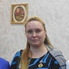

Дошкольное отделение гимназии № 402
В 2015 году 63% первоклассников Гимназии № 402 пришли из дошкольного отделения.
- Вешняковская улица, 25А
- Вешняковская улица, 25А
- Косинская улица, 4А
Воспитатели
Воспитатели, которых чаще всего благодарят родители (отзывы и профили сотрудников взяты с официального сайта школы):|
Воспитатель
Асаева Екатерина Сергеевна
4 благодарности |
 Воспитатель
Хайкина Виктория Юрьевна
Воспитатель
Хайкина Виктория Юрьевна
3 благодарности |
Муз. рук.
Виноградова Ольга Михайловна
3 благодарности |
Воспитатель
Виноградова Людмила Алексеевна
3 благодарности |
|
Воспитатель
Воронцова Наталья Евгеньевна
2 благодарности |
Муз. рук.
Князева Наталья Алексеевна
2 благодарности |
Воспитатель
Брендзий Наталья Викторовна
2 благодарности |
Психолог
Сейдинович Мария Владимировна
1 благодарность |
|
Муз. рук.
Антонова Людмила Захаровна
1 благодарность |
Воспитатель
Мошкова Елена Сергеевна
1 благодарность |
Воспитатель
Кошелева Ольга Валентиновна
1 благодарность |
Воспитатель
Родина Александра Сергеевна
1 благодарность |
|
Физ. рук.
Уськов Константин Владимирович
1 благодарность |
Руководитель
Осипова Тамара Ивановна
1 благодарность |
Воспитатель
Иванова Галина Александровна
1 благодарность |
Логопед
Кухарева Ольга Анатольевна
1 благодарность |
|
Воспитатель
Голубева Светлана Валентиновна
1 благодарность |

Воспитатель
Климова Ольга Юрьевна
1 благодарность |
Отзывы
Данные собраны c официального сайта школы и через форму для отзывов.
Выражаем огромную благодарность музыкальному руководителю Виноградовой Ольге Михайловне дошкольного структурного подразделения №4 за трепетное отношение к работе, за музыкальное воспитание наших детей и за чудесный репертуар на праздниках, каждый из которых – это увлекательное, профессионально продуманное представление. Великолепные праздники надолго остаются в памяти детей и родителей.
Ольга Михайловна – это человек с тонким чувством прекрасного, автор замечательных песен. Её энергичность, богатый творческий потенциал способствует созданию условий для развития творческих способностей наших деток.
Большое спасибо за ее благородное дело, за индивидуальный подход и чуткое отношение к нашим детям!
Ольга Михайловна – это человек с тонким чувством прекрасного, автор замечательных песен. Её энергичность, богатый творческий потенциал способствует созданию условий для развития творческих способностей наших деток.
Большое спасибо за ее благородное дело, за индивидуальный подход и чуткое отношение к нашим детям!
Хочу выразить огромную благодарность, всем без исключения,администрации гимназии №402 имени Алии Молдагуловой и сотрудникам сада № 880.В нашем саду очень добрая,уютная и доброжелательная атмосфера.
Особенно хочется отметить работу воспитателей подготовительной группы №2 Асаеву Екатерину Сергеевну,Мильтонову Валентину Александровну и Меньшикову Галину Филипповну.Они очень разнообразно и интересно проводят разные занятия с нашими детками.Екатерина Сергеевна делает с ребятами разные тематические проекты,проводит творческие занятия,прививает им любовь к чтению.Валентина Александровна уделяет время занятиям математикой,письмом,обучению грамоте.Все занятия проходят в непринужденной игровой форме,что очень важно для детей.
Также хочу отметить работу Натальи Алексеевны ,нашего музыкального работника.Потрясающая постановка номеров к праздникам,безумно красивые танцы,песни,стихи,которые надолго запоминаются в памяти.А также участие родителей вместе с детьми в праздничных номерах.Это очень необходимо детям,они чувствуют ,что мы все одна дружная семья!!!
Так как наш сад имеет статус художественно-эстетического воспитания,то много времени уделяется творческому процессу:занятия лепкой,изостудия и много совместных работ воспитатель-дети-родители.Мы вместе делаем новогодние украшения,поделки.Наш сад на Новый Год превратился в сказочный,новогодний домик.И родителям и особенно детям приятно приходить в волшебный дом ,где поднимается настроение от доброй и удивительно приятной обстановки,царящей здесь.
Отдельное спасибо нашему психологу Марии Владимировне.Своим лучезарным настроением и зарядом энергии,она помогает ребяткам справиться с трудными ситуациями,дает им веру в себя,и всегда даст профессиональный совет родителям бесконфликтно решить самую сложную ситуацию.
Великолепный преподаватель по физкультуре Константин Владимирович.Моя дочь просто обожает его занятия,соревнования,разные спортивные конкурсы.И всегда побеждает дружба.Это главный девиз нашего садика.И в наше непростое время это очень важно.
Еще раз огромное спасибо всем сотрудникам сада за Ваш профессионализм и нелегкий труд!!!!
Вложенный файл
Особенно хочется отметить работу воспитателей подготовительной группы №2 Асаеву Екатерину Сергеевну,Мильтонову Валентину Александровну и Меньшикову Галину Филипповну.Они очень разнообразно и интересно проводят разные занятия с нашими детками.Екатерина Сергеевна делает с ребятами разные тематические проекты,проводит творческие занятия,прививает им любовь к чтению.Валентина Александровна уделяет время занятиям математикой,письмом,обучению грамоте.Все занятия проходят в непринужденной игровой форме,что очень важно для детей.
Также хочу отметить работу Натальи Алексеевны ,нашего музыкального работника.Потрясающая постановка номеров к праздникам,безумно красивые танцы,песни,стихи,которые надолго запоминаются в памяти.А также участие родителей вместе с детьми в праздничных номерах.Это очень необходимо детям,они чувствуют ,что мы все одна дружная семья!!!
Так как наш сад имеет статус художественно-эстетического воспитания,то много времени уделяется творческому процессу:занятия лепкой,изостудия и много совместных работ воспитатель-дети-родители.Мы вместе делаем новогодние украшения,поделки.Наш сад на Новый Год превратился в сказочный,новогодний домик.И родителям и особенно детям приятно приходить в волшебный дом ,где поднимается настроение от доброй и удивительно приятной обстановки,царящей здесь.
Отдельное спасибо нашему психологу Марии Владимировне.Своим лучезарным настроением и зарядом энергии,она помогает ребяткам справиться с трудными ситуациями,дает им веру в себя,и всегда даст профессиональный совет родителям бесконфликтно решить самую сложную ситуацию.
Великолепный преподаватель по физкультуре Константин Владимирович.Моя дочь просто обожает его занятия,соревнования,разные спортивные конкурсы.И всегда побеждает дружба.Это главный девиз нашего садика.И в наше непростое время это очень важно.
Еще раз огромное спасибо всем сотрудникам сада за Ваш профессионализм и нелегкий труд!!!!
Вложенный файл
Хотим выразить огромную благодарность нашим воспитателям Галине Александровне,Ольге Юрьевне,Светлане Петровне,муз. работнику Людмиле Захаровне и всем, кто принял участие в организации и проведении детского утренника посвященного ДНЮ МАМЫ в нашей группе.
Всё было хорошо организовано, подготовлено, отрепетировано, и в то же время очень непосредственно. Сценарий мероприятия продуман. Все детки читали стихи, все вместе пели песни,водили хоровод,танцевали. Много конкурсов и мамы тоже приняли участие,все очень понравилось!Молодцы!!!
Всё было хорошо организовано, подготовлено, отрепетировано, и в то же время очень непосредственно. Сценарий мероприятия продуман. Все детки читали стихи, все вместе пели песни,водили хоровод,танцевали. Много конкурсов и мамы тоже приняли участие,все очень понравилось!Молодцы!!!
Хотим выразить огромную благодарность нашим воспитателям Светлане Валентиновне,Александре Сергеевне,Елене Сергеевне,муз. работнику Наталье Алексеевне и всем, кто принял участие в организации и проведении детского праздника посвященного ДНЮ МАМЫ в нашей группе.
Всё было очень хорошо подготовлено, отрепетировано, и в то же время очень непосредственно. Сценарий продуман великолепно. Все детки читали стихи, все вместе пели песни, водили хоровод, танцевали, участвовали в конкурсах. Много конкурсов и мамы тоже приняли участие вместе с детьми,все очень понравилось, весело и интересно!Молодцы!!!Браво!!!
Всё было очень хорошо подготовлено, отрепетировано, и в то же время очень непосредственно. Сценарий продуман великолепно. Все детки читали стихи, все вместе пели песни, водили хоровод, танцевали, участвовали в конкурсах. Много конкурсов и мамы тоже приняли участие вместе с детьми,все очень понравилось, весело и интересно!Молодцы!!!Браво!!!
Добрый день!
Хотелось бы поблагодарить воспитателей группы № 8 (СП №4) Виноградову Людмилу Алексеевну и Хайкину Викторию Юрьевну и помощника воспитателя Иванову Ольгу Анатольевну за организацию праздника "День мамы" в группе. Спасибо огромное праздник понравился. Особенно нашей маме понравился букет, который дети сделали своими руками для мам.
С уважением,
семья Воротовых
Хотелось бы поблагодарить воспитателей группы № 8 (СП №4) Виноградову Людмилу Алексеевну и Хайкину Викторию Юрьевну и помощника воспитателя Иванову Ольгу Анатольевну за организацию праздника "День мамы" в группе. Спасибо огромное праздник понравился. Особенно нашей маме понравился букет, который дети сделали своими руками для мам.
С уважением,
семья Воротовых
Сегодня наши дети и мы, родители, прощаемся с детским садом. С большим удовольствием мы хотим сказать самые добрые слова и от всей души поблагодарить коллектив детского сада и наших дорогих воспитателей:
Хайкину Викторию Юрьевну, Виноградову Людмилу Алексеевну, Дроздову Риму Александровну, Иванову Ольгу Анатольевну, а так же музыкального работника Виноградову Ольгу Михайловну и воспитателя по физической культуре Кошелеву Ольгу Валентиновну.
Когда мы привели своих малышей в наш сад, мы очень волновались, ведь впервые нам приходилось доверять самое дорогое наше сокровище другим людям. Но волновались мы зря. Наши дети попали в руки настоящих специалистов и заботливых, любящих людей!
Наши воспитатели вместе с нами день за днём растили наших малышей, заботились о них, помогали им познавать мир вокруг, давали знания, учили доброте и любили! В нашей группе всегда царила доброжелательная атмосфера, в которой было очень приятно находится и ребятам и родителям.
Сегодня мы видим, как выросли наши малыши. Они уже готовы стать школьниками, осталось совсем немного времени до того, как прозвенит их первый школьный звонок.
Сегодня мы говорим большое спасибо всем, кто вместе с нами прошёл этот огромный путь от ясельной группы до школьной скамьи, всем, кто взял на себя огромную ответственность - растить наших детей. Мы желаем им успехов в этом благородном труде, здоровья и благополучия!
Хайкину Викторию Юрьевну, Виноградову Людмилу Алексеевну, Дроздову Риму Александровну, Иванову Ольгу Анатольевну, а так же музыкального работника Виноградову Ольгу Михайловну и воспитателя по физической культуре Кошелеву Ольгу Валентиновну.
Когда мы привели своих малышей в наш сад, мы очень волновались, ведь впервые нам приходилось доверять самое дорогое наше сокровище другим людям. Но волновались мы зря. Наши дети попали в руки настоящих специалистов и заботливых, любящих людей!
Наши воспитатели вместе с нами день за днём растили наших малышей, заботились о них, помогали им познавать мир вокруг, давали знания, учили доброте и любили! В нашей группе всегда царила доброжелательная атмосфера, в которой было очень приятно находится и ребятам и родителям.
Сегодня мы видим, как выросли наши малыши. Они уже готовы стать школьниками, осталось совсем немного времени до того, как прозвенит их первый школьный звонок.
Сегодня мы говорим большое спасибо всем, кто вместе с нами прошёл этот огромный путь от ясельной группы до школьной скамьи, всем, кто взял на себя огромную ответственность - растить наших детей. Мы желаем им успехов в этом благородном труде, здоровья и благополучия!
Благодарность д/с 761. Гр 8
Хочу выразить огромную благодарность заведующей Тамаре Ивановне , воспитателям , логопеду , нянечки и всем сотрудникам этого чудесного садика, за их чуткое руководство, за доброту и отзывчивость, сердечность, открытость, за высокий профессионализм в работе. В детском садике царит атмосфера доброжелательности и комфорта. Там проводят чудесные праздники, от которых наши дети и родители просто в восторге. Мой сын с удовольствием ходит в садик и вечером просит забирать ее попозже, чтобы он мог наиграться и подольше погулять . Мы очень любим наших воспитателей Викторию Юрьевну и Людмилу Алексеевну , логопеда Римму Алексеевну и нянечку Ольгу Анатольевну .Наши воспитатели и логопед строгие , но в тоже время очень добрые, ласковые, внимательные к каждому ребенку, они проводят интересные обще развивающие занятия для детишек и воспитывают их добрыми, отзывчивыми, интеллектуально развитыми. Еще в садике есть занятия ритмикой, физкультурные и музыкальные уроки, от которых дети получают массу удовольствия. Наши детки гармонично развиваются как умственно, так и физически.
Хочется поблагодарить руководство и весь педагогический коллектив за их добросовестное отношение к своей работе, высокий профессионализм и любовь, которую они дарят нашим деткам и нам.
Хочу выразить огромную благодарность заведующей Тамаре Ивановне , воспитателям , логопеду , нянечки и всем сотрудникам этого чудесного садика, за их чуткое руководство, за доброту и отзывчивость, сердечность, открытость, за высокий профессионализм в работе. В детском садике царит атмосфера доброжелательности и комфорта. Там проводят чудесные праздники, от которых наши дети и родители просто в восторге. Мой сын с удовольствием ходит в садик и вечером просит забирать ее попозже, чтобы он мог наиграться и подольше погулять . Мы очень любим наших воспитателей Викторию Юрьевну и Людмилу Алексеевну , логопеда Римму Алексеевну и нянечку Ольгу Анатольевну .Наши воспитатели и логопед строгие , но в тоже время очень добрые, ласковые, внимательные к каждому ребенку, они проводят интересные обще развивающие занятия для детишек и воспитывают их добрыми, отзывчивыми, интеллектуально развитыми. Еще в садике есть занятия ритмикой, физкультурные и музыкальные уроки, от которых дети получают массу удовольствия. Наши детки гармонично развиваются как умственно, так и физически.
Хочется поблагодарить руководство и весь педагогический коллектив за их добросовестное отношение к своей работе, высокий профессионализм и любовь, которую они дарят нашим деткам и нам.
Добрый день! Хочу выразить благодарность воспитателям 7-й группы детского сада Ореховой Валентине Ивановне и Наталье Викторовне. Спасибо Вам огромное за то, что научили детей дружить, за то, что занимаетесь с ними и любите! Группа очень дружная. Моя дочь - Севостьянова Екатерина с радостью бежит в садик (встречаю такое в первый раз, у меня трое детей), радуется своим друзьям, всегда в хорошем настроении. И все это благодаря Валентине Ивановне и Наталье Викторовне. Спасибо Вам огромное! Нам очень повезло с Вами:)
Благодарственное письмо!
Родители ГКП №1 выражают огромную благодарность Сотниковой Татьяне Яковлевне за открытие 5-ти часовой группы кратковременного пребывания в дошкольном отделении № 880, за предоставление удобного для родителей и детей графика функционирования этой группы. Спасибо, огромное за то, что вы вместе с Людмилой Владимировной Коняшкиной прислушиваетесь к нашим просьбам и обращениям, создаете деткам наилучшие условия для пребывания и адаптации. Мы еще не встречали таких отзывчивых и высокопрофессиональных педагогов!! Мы гордимся нашим дошкольным учреждением! Спасибо огромное, что вы так умело и грамотно построили и наладили его работу!!! Отдельное и огромное СПАСИБО хочется сказать нашим дорогим и любимым людям Воронцовой Наталье Евгеньевне и Чумаковой Елене Васильевне, которые делят с нашими детками каждую минутку пребывания в саду. Наталья Евгеньевна, творчески работающий, хорошо знающий психологию детей, воспитатель и настоящий педагог. К детям всегда относится с большой заботой и пониманием. В ней сочетается огромное трудолюбие, любовь к своей профессии, детям, стремление к творчеству.Елена Васильевна, всегда дружелюбна, ласкова и доброжелательна. Мы безумно счастливы, что наши детки под вашим присмотром и ласковым крылом!
Родители ГКП №1 выражают огромную благодарность Сотниковой Татьяне Яковлевне за открытие 5-ти часовой группы кратковременного пребывания в дошкольном отделении № 880, за предоставление удобного для родителей и детей графика функционирования этой группы. Спасибо, огромное за то, что вы вместе с Людмилой Владимировной Коняшкиной прислушиваетесь к нашим просьбам и обращениям, создаете деткам наилучшие условия для пребывания и адаптации. Мы еще не встречали таких отзывчивых и высокопрофессиональных педагогов!! Мы гордимся нашим дошкольным учреждением! Спасибо огромное, что вы так умело и грамотно построили и наладили его работу!!! Отдельное и огромное СПАСИБО хочется сказать нашим дорогим и любимым людям Воронцовой Наталье Евгеньевне и Чумаковой Елене Васильевне, которые делят с нашими детками каждую минутку пребывания в саду. Наталья Евгеньевна, творчески работающий, хорошо знающий психологию детей, воспитатель и настоящий педагог. К детям всегда относится с большой заботой и пониманием. В ней сочетается огромное трудолюбие, любовь к своей профессии, детям, стремление к творчеству.Елена Васильевна, всегда дружелюбна, ласкова и доброжелательна. Мы безумно счастливы, что наши детки под вашим присмотром и ласковым крылом!
Если вы нашли ошибку или неточность, пожалуйста, сообщите нам об этом.
Ученик, выпускник или родитель? Оставьте отзыв о детском саде.